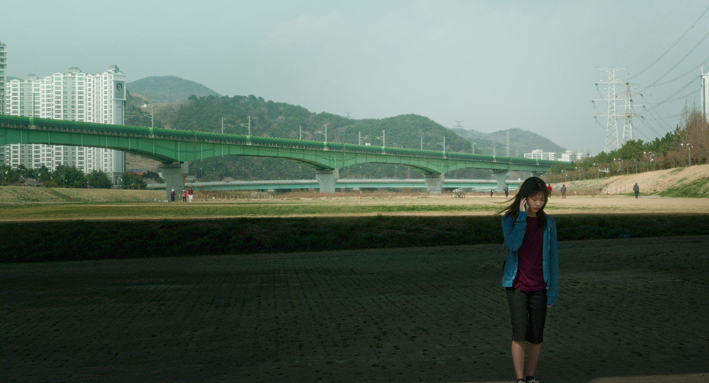
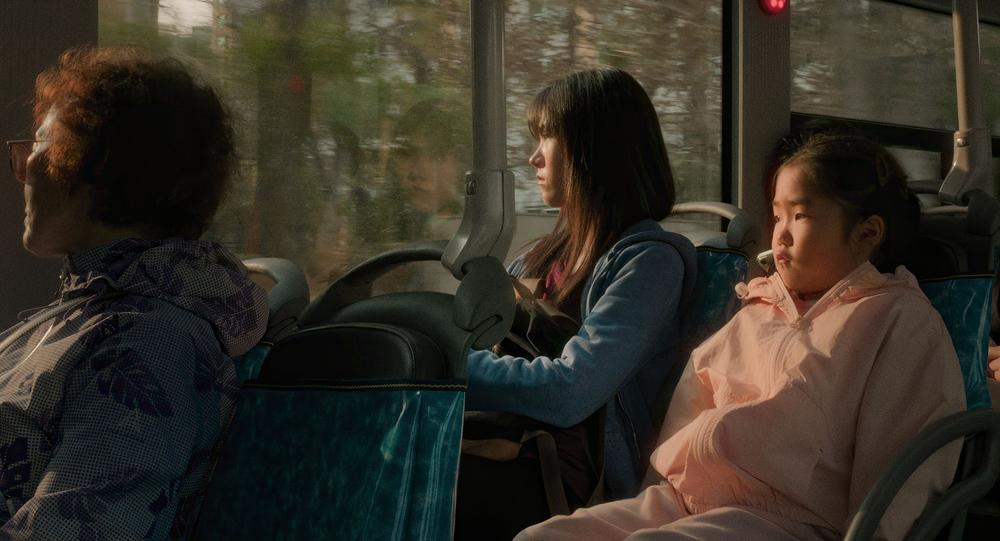
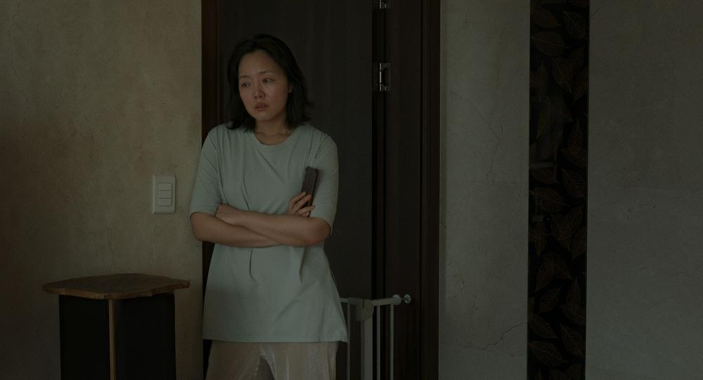
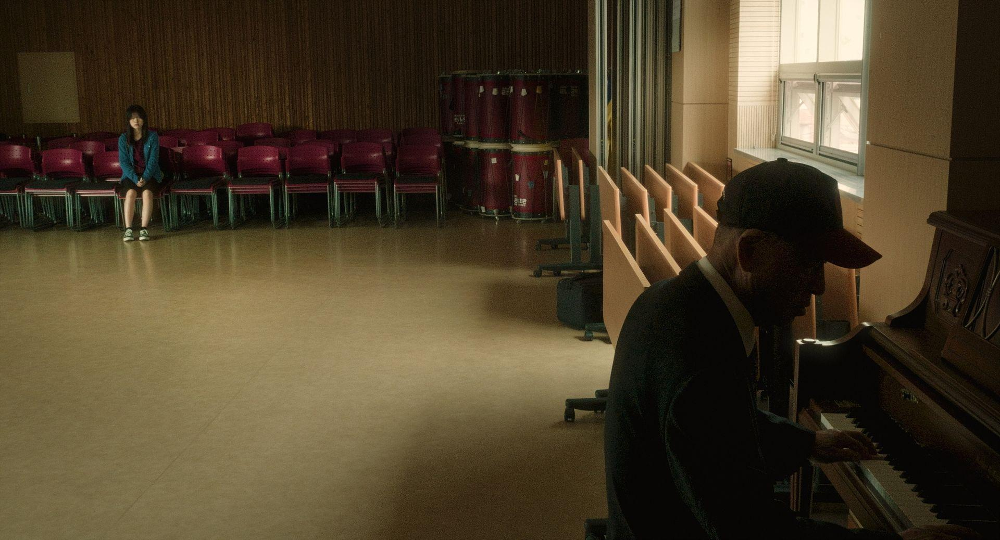
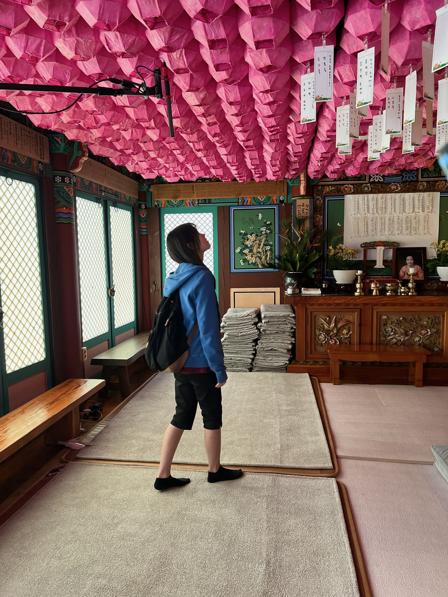
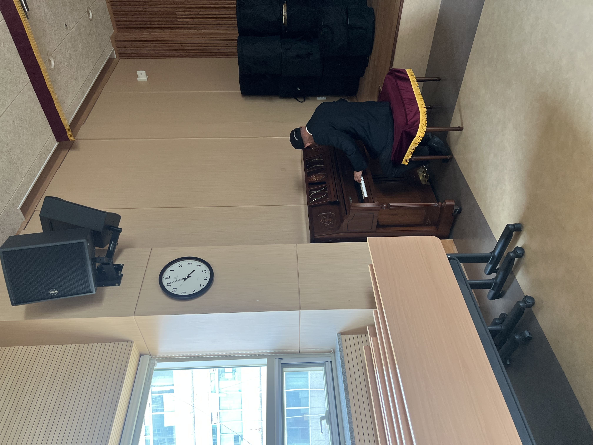
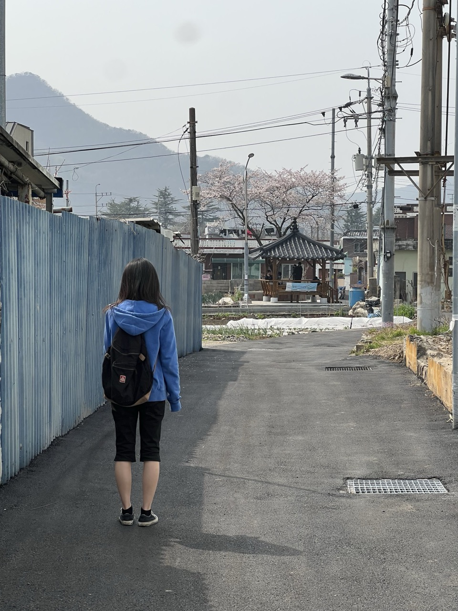

Director : Seonjeong Gong
Film | 29min | Screening | DCP | Color | 2026
Assistant Director, Stylist : Hyunjin Kim
(Official Program Note)
양산 할머니 댁에 갔는데 할머니가 안 계신다. 수아에게 할머니는 어디 갈 데 없는 사람이다. 목욕탕 아니면 절, 갈 데가 뻔하다. 그렇게 할머니를 찾아 여기저기를 기웃거린 거리의 하루가 담백한 다큐멘터리 터치에 담긴다. 마음을 기울여 찍은, 청년의 시선에 담긴 노년의 풍경. (강소원)
Su-a arrives in Yangsan to visit her grandmother, but she is not home. The old lady is not someone with many places to go - just the bathhouse or the Buddhist temple. Su-a spends the day wandering through the streets in search of her grandmother, and the search is captured with a sincere, documentary touch. A young person’s view of old age, filmed with warmth and care. (KANG Sowon)







벚꽃 피는 양산의 봄에, 노년의 시간을 따라 걷는 경험을 했다. 양산의 봄은 노랗고 초록색의 풍경이다. 그 공간 속에서 가장 섞이지 못하는, 다른 시간 속에 있는 수아를 자연 속에서 찾아보기 힘든 파란 색의 옷으로 스타일링했다.